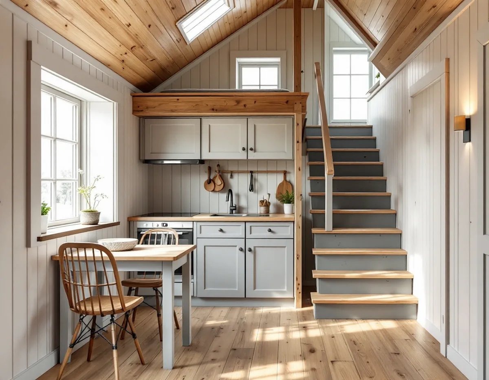
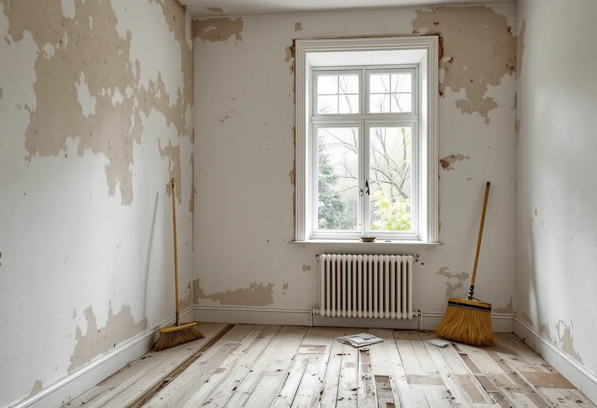

Platsbesök
Gärna före tillträdet – vi går igenom huset och gör en första plan.
En bra tid att renovera hela huset är mellan tillträdet och inflyttningen, när rummen står tomma. Geal Entreprenad AB tar totalrenoveringar av villor, radhus och bostadsrätter i Enskede som en total entreprenad, och vi hjälper dig att lägga upp arbetet så att det är klart när flyttlasset kommer.

Stadens vägledning Varsam utveckling av småhus- och villaområden beskriver Gamla Enskede som Stockholms första trädgårdsstad, anlagd efter stadsplanedirektör Per Olof Hallmans stadsplan från 1908. Om trädgårdsstäderna i stort skriver vägledningen att typritningar togs fram för att få ett enhetligt uttryck, och att den mest kända är Enskedestugan. Huvuddelen av bebyggelsen var friliggande enfamiljshus i ett plan med delvis inredd vind, men radhus och parhus förekom också.
Gamla Enskede är i dag en blandad stadsdel. I stadens områdesfakta för 2025 har stadsdelen 5 117 bostäder, varav 923 i småhus och 2 360 bostadsrätter. En totalrenovering kan alltså gälla både en liten villa med snedtak och en lägenhet i ett flerbostadshus.
I ett hus med delvis inredd vind är varje kvadratmeter värdefull. När hela huset görs om samtidigt går det att planera om förvaring, trappa och badrum i ett sammanhang, i stället för att lösa ett rum i taget.

Skatteverket skriver att du kan få rotavdrag för att renovera en bostad som du nyligen har köpt men ännu inte flyttat in i. Det förutsätter att ingen annan bor i bostaden när arbetet utförs och att du flyttar in direkt efter renoveringen. Köper du i stället en bostad för att hyra ut eller sälja den ges inget rotavdrag.
Du måste äga bostaden under den tid som arbetet utförs. Skatteverket påminner om att lagfart ska sökas inom tre månader efter köpet, och om du inte hunnit ansöka om lagfart kan företaget behöva köpehandlingarna när det ansöker om utbetalningen. För en bostadsrätt behöver företaget i stället föreningens organisationsnummer och lägenhetsnumret.
Vi börjar planera redan före tillträdet om du vill. Vid ett platsbesök under visningsperioden eller strax efter kontraktet går vi igenom huset och gör en första plan för vad som ska göras. När nycklarna är dina kan rivningen börja direkt.
Ett tomt hus gör arbetet enklare: vi kan arbeta i flera rum samtidigt, och inget behöver flyttas fram och tillbaka. Det som tar längst tid är ofta beslut om kök, badrum och material, så de valen gör vi tillsammans tidigt. Om det blir trångt i tidplanen föreslår vi att badrum och kök blir klara först, så att huset går att bo i medan sista ytskikten görs. Badrum i husen beskrivs under badrumsrenovering i Enskede och köket under köksrenovering i Enskede.
Köper ni huset tillsammans kan ni dela på rotavdraget, men enligt Skatteverket kan det sammanlagt inte bli högre än 30 procent av den totala arbetskostnaden. Om en av er redan har använt sitt utrymme för året kan företaget ansöka om utbetalning för någon annan i hushållet som också äger bostaden.
Från och med den 1 januari 2020 måste betalningen vara elektroniskt spårbar för att rotavdrag ska ges, och först när arbetet är utfört och betalt kan företaget begära utbetalning från Skatteverket. Det är bara arbetad tid på plats hos dig som räknas. Gäller frågan i stället byggplatsen på gatan, container och träd finns mer under byggföretag i Enskede.
Gärna före tillträdet – vi går igenom huset och gör en första plan.
Kök, badrum och material väljs tidigt, och tidplanen räknas bakåt från flyttdagen.
Arbete och material redovisas var för sig, så att rotavdraget blir tydligt.
När nycklarna är dina börjar vi riva det som ska bort.
Installationer, badrum, kök och ytskikt i tur och ordning – el och VVS via behöriga.
Vi går igenom huset med dig innan flyttlasset kommer.
Rotavdrag ges för en nyköpt bostad som ingen annan bor i medan arbetet pågår, om du flyttar in direkt efter renoveringen. Du ska äga bostaden när arbetet utförs.
Företaget får dra av högst 30 procent av arbetskostnaden på fakturan. Rotavdraget är högst 50 000 kr per person och år och högst 75 000 kr tillsammans med rutavdrag. Material och resor ger inget avdrag. Geal drar avdraget direkt på fakturan.
Husets storlek och skick, hur mycket som rivs, omfattningen av el och rör och vilket kök och badrum du väljer avgör mest. Efter ett gratis platsbesök får du ett skriftligt kostnadsförslag.
Renovera hela huset eller lägenheten.
Villarenovering →Takbyte, takbesiktning och plåtarbeten.
Takläggare i Enskede →Trädgårdsstad med lertegel.
Takrenovering i Enskede →Trädgårdsstaden, kartan och lovet.
Attefallshus i Enskede →Typhus i trä, träbjälklag och bostadsrätt.
Badrumsrenovering i Enskede →Byggplatsen, gatan och träden.
Byggföretag i Enskede →Trädgårdsstadens kulörer.
Fasadmålning i Enskede →Trähus, putsade typhus och småstugor i Enskede.
Fasadrenovering i Enskede →Fönster i riksintresset.
Fönsterbyte i Enskede →Trädgårdsstadens fönster.
Fönsterrenovering i Enskede →Lut, såpa och olja på fur och gran.
Golvläggare i Enskede →Slipa fram gamla brädgolv i villan.
Golvslipning i Enskede →Typhus, dubbelhus och småstugor.
Köksrenovering i Enskede →Trädgårdsstad, egnahem och småstugor i Enskede.
Målare i Enskede →Snörasskydd, rännor och verandaplåt i Enskede.
Plåtslagare i Enskede →Verandor, entréer och bodar i trädgårdsstaden.
Snickare i Enskede →Takfallet, höjden och riksintresset.
Takbyte i Enskede →Tapet i vindsrum och snedtak.
Tapetsering i Enskede →Små tomter och riksintresse.
Tillbyggnad i Enskede →